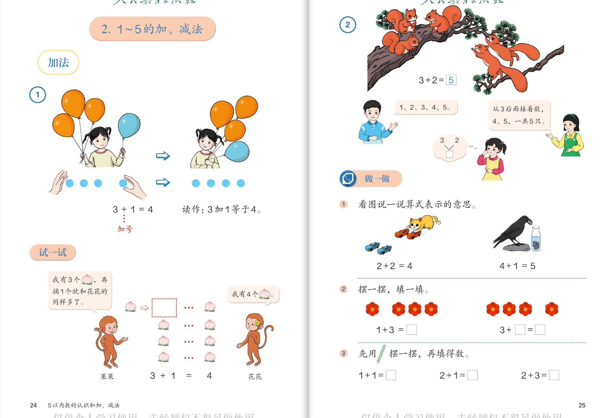
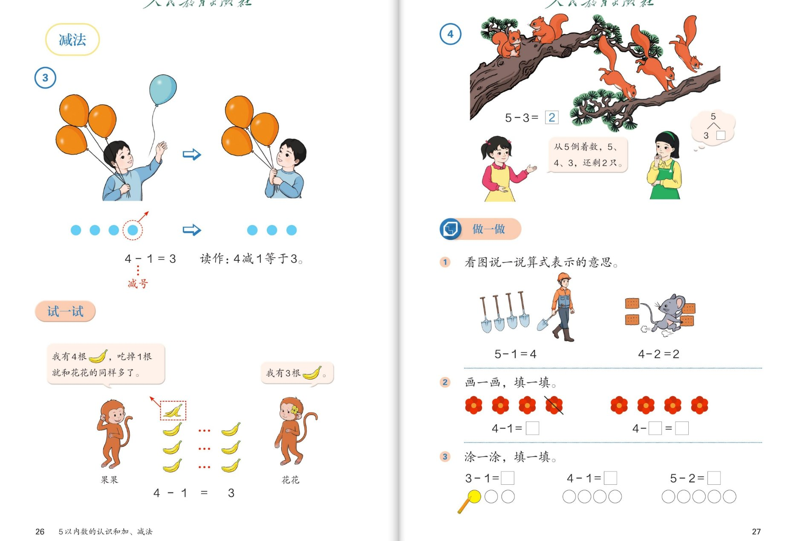
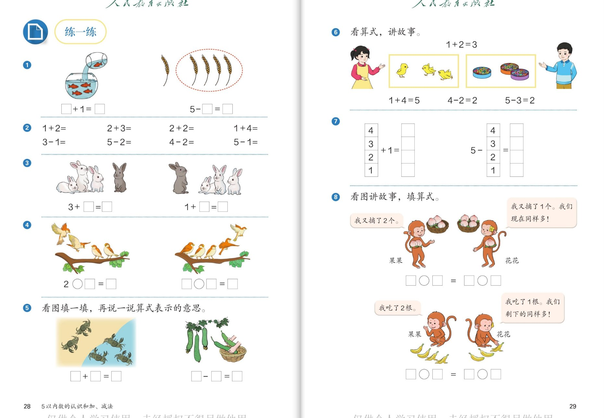

🧠 认知层 · 看懂图意、认识加减号
💪 强化层 · 会算会说、算得有方法
🚀 拓展层 · 算式会讲故事、加减会联系
👨👩👧 使用建议：每组内容配 6 个问题，按"认知 → 强化 → 拓展"三层递进。
加减法起步最重要的是看着图说出算式的意思（比如"3 只又来 1 只，合起来是 4 只"），而不是急着背得数。
点击问题卡片展开参考答案；孩子能用自己的话讲出图意，就达到目标了。
➕
🔴 加法（第24～25页）
认识加号 · 合起来 · 3+2 的算法

📖 课本第 24～25 页 · 加法 / 试一试 / 做一做
🧠 认知层看懂"合起来"，认识加号
🎈
认知 1：小女孩原来拿着 3 个气球，又拿来 1 个，现在一共有几个？算式怎么写？"+"叫什么名字？这个算式怎么读？
看答案
参考答案：
- 一共有 4 个气球；算式是 3 + 1 = 4；
- "+"叫加号；算式读作"3 加 1 等于 4"。
💡 把两部分合在一起，求一共多少，就用加法。点着数：1、2、3，再添 1 是 4。
🐿️
认知 2：松树上有 3 只松鼠，又跳上来 2 只，一共有几只？把算式填完整：3 + 2 = □
看答案
参考答案：
3 + 2 =
5，一共有
5 只松鼠。
- 左边树枝上 3 只，右边树枝上 2 只，合起来数一数：1、2、3、4、5。
💪 强化层会多种算法，会说图意
🍑
强化 1：试一试：果果有 3 个桃，"再摘 1 个就和花花同样多"。花花有几个桃？谁能用算式把这件事讲出来？
看答案
参考答案：
- 花花有 4 个桃；
- 算式：3 + 1 = 4——果果的 3 个，加上再摘的 1 个，正好和花花的 4 个同样多。
💡 "同样多"藏着加法：比 3 多 1 的数是 4。
🐱
强化 2：做一做：小猫玩球图是 2+2=4，乌鸦喝水图是 4+1=5。看图说一说，每个算式表示什么意思？再算一算 1+3=□、3+□=□。
看答案
参考答案：
- 2+2=4：地上有 2 辆玩具车，猫妈妈推来 2 辆，合起来是 4 辆；
- 4+1=5：乌鸦面前有 4 块石子，又叼来 1 块，一共 5 块；
- 1 + 3 = 4；3 + 1 = 4。
🌈 说图意时用上"原来……又……一共……"就特别清楚！
🚀 拓展层比算法、找规律
🧮
拓展 1：算 3+2 时，书上两个小朋友用了不同方法：一个点着数"1、2、3、4、5"，一个"从 3 后面接着数：4、5"。还有别的方法吗？哪种你觉得快？
看答案
参考答案：
- 方法一：从头点数 1、2、3、4、5；
- 方法二：从 3 后面接着数 4、5（一共 5 只）；
- 方法三：想分与合——"3 和 2 组成 5"，直接说出得数。
💡 想分与合最快！点数适合刚开始学，接着数进了一步，用"组成"直接想结果是高招。
🌟
拓展 2（小小挑战）：你能写出几个得数是 5 的加法算式？得数是 4 的呢？
看答案
参考答案：
- 得数是 5：1+4、2+3、3+2、4+1（还有 5+0，以后会学到）；
- 得数是 4：1+3、2+2、3+1。
🌟 按"第一个数从 1 开始慢慢变大"的顺序写，一个都不会漏！
➖
🔵 减法（第26～27页）
认识减号 · 去掉 · 5-3 的算法

📖 课本第 26～27 页 · 减法 / 试一试 / 做一做
🧠 认知层看懂"去掉"，认识减号
🎈
认知 1：小男孩原来有 4 个气球，飞走了 1 个，还剩几个？算式怎么写？"−"叫什么名字？这个算式怎么读？
看答案
参考答案：
- 还剩 3 个气球；算式是 4 − 1 = 3；
- "−"叫减号；算式读作"4 减 1 等于 3"。
💡 从总数里去掉一部分，求还剩多少，就用减法。
🐿️
认知 2：树上原来有 5 只松鼠，跑走了 3 只，还剩几只？书上两个小朋友分别是怎么算出 5−3=2 的？
看答案
参考答案：
- 5 − 3 = 2，还剩 2 只松鼠；
- 方法一（倒数）：从 5 倒着数，5、4、3，还剩 2 只；
- 方法二（想分与合）：想"5 可以分成 3 和 2"，所以剩下 2 只。
💪 强化层会看图列式、会画图计算
🍌
强化 1：试一试：果果有 4 根香蕉，"吃掉 1 根就和花花同样多"。花花有几根？用算式说一说这件事。
看答案
参考答案：
- 花花有 3 根香蕉；
- 算式：4 − 1 = 3——4 根去掉吃掉的 1 根，剩 3 根，正好和花花同样多。
🌷
强化 2：做一做"画一画，填一填"：4−1=□ 该划掉几朵花？4−□=□ 你能自己编一道吗？再算 3−1=□、4−1=□、5−2=□。
看答案
参考答案：
- 4−1：4 朵花里划掉 1 朵，剩 3 朵，4−1=3；
- 第二题可以划掉 2 朵：4−2=2（也可以划 1 朵或 3 朵，只要算式写得对）；
- 3−1=2；4−1=3；5−2=3。
🌈 "画一画、划一划"是算减法的好帮手：划掉几个就是减几。
🚀 拓展层算式讲故事、加减找联系
🗣️
拓展 1：不看图，用"4−1=3"编一个生活中的小故事（比如关于水果、玩具、气球都行）。
看答案
参考示例（编法不唯一）：
- "我买了 4 个苹果，送给奶奶 1 个，还剩 3 个。"
- "停车场有 4 辆车，开走 1 辆，还剩 3 辆。"
- "树上有 4 只小鸟，飞走 1 只，还剩 3 只。"
🌟 会给算式"编故事"，说明真正懂了减法的意思！
🔄
拓展 2（小小挑战）：加法页学过 3+1=4，减法页学过 4−1=3。这两个算式有什么关系？
看答案
参考答案：
它们是
一家人：3 和 1 合起来是 4；从 4 里去掉 1 又回到 3。
- 加是把两部分合起来，减是从总数里去掉一部分，正好反过来。
- 所以算减法时，也可以想加法："1 加几等于 4？1 加 3 等于 4，所以 4−1=3。"
💡 发现加减法互为"逆"关系，是了不起的数学眼光！
✅
🟢 练一练（第28～29页）
看图列式 · 口算 · 看算式讲故事

📖 课本第 28～29 页 · 练一练
🧠 认知层看图填算式
🐠
认知 1：金鱼缸图：□+1=□。鱼缸里原来有几条金鱼？又倒进来 1 条后，现在有几条？把算式填完整。
看答案
参考答案：
- 鱼缸里原来有 4 条金鱼，倒进 1 条后一共有 5 条；
- 算式：4 + 1 = 5。
🌾
认知 2：麦穗图：5−□=□。圈起来（拿走）了几穗麦子？还剩几穗？把算式填完整。
看答案
参考答案：
- 一共 5 穗麦子，圈走 1 穗，还剩 4 穗；
- 算式：5 − 1 = 4。
💪 强化层口算过关、看图补全算式
⏱️
强化 1：口算小擂台（第②题）：1+2、2+3、2+2、1+4、3−1、5−2、4−2、5−1，看谁算得又对又快！
看答案
参考答案：
- 加法：1+2=3；2+3=5；2+2=4；1+4=5；
- 减法：3−1=2；5−2=3；4−2=2；5−1=4。
🌈 算不出来的话，用手指点一点、想一想"几和几组成几"，都是好办法。
🐰
强化 2：看图填一填：小白兔图 3+□=□（3 只白兔加几只灰兔？）；灰兔图 1+□=□。再看看小鸟图，2○□=□ 该填"+"还是"−"？
看答案
参考答案：
- 3 + 1 = 4（3 只白兔和 1 只灰兔合起来是 4 只）；
- 1 + 2 = 3（1 只灰兔和 2 只白兔合起来是 3 只）；
- 小鸟图：原来 2 只，又飞来 2 只，是加：2 + 2 = 4（若图意是飞走，则用减号，按图上箭头方向判断）。
🌈 关键看图意：鸟飞来用加号，鸟飞走用减号。
🚀 拓展层看算式讲故事、找变化
📖
拓展 1：看算式，讲故事（第⑥题）：1+2=3、1+4=5、4−2=2、5−3=2。任选一个算式，结合小鸡图或食盆图讲一个小故事。
看答案
参考示例：
- 1+2=3：鸡妈妈身边有 1 只小鸡，又跑来 2 只，一共有 3 只小鸡；
- 4−2=2：盘子里有 4 份食物，被吃掉 2 份，还剩 2 份；
- 1+4=5：1 只大鸡带着 4 只小鸡，一共 5 只鸡。
🌟 故事里只要说清"原来多少、变了多少、结果多少"，就是好故事！
🐵
拓展 2（最难挑战）：猴子摘桃（第⑧题）：果果说"我又摘了 2 个"，花花说"我又摘了 1 个，我们现在同样多"。原来谁的桃多？两道算式该怎样填？
看答案
参考答案：
- 果果：原来 1 个，又摘 2 个：1 + 2 = 3；
- 花花：原来 2 个，又摘 1 个：2 + 1 = 3；
- 两人现在都有 3 个，所以"同样多"——原来花花多 1 个，摘得少也追平了。
💡 下面的香蕉题同理：果果 4−2=2，花花 3−1=2——原来果果多 1 根，吃得多的反而追平了。发现"多 1 的秘密"了吗？多的人要变少（或少摘）、少的人要变多（或多摘），才能同样多！